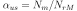

imblearn.ensemble.RUSBoostClassifier¶
-
class
imblearn.ensemble.RUSBoostClassifier(base_estimator=None, n_estimators=50, learning_rate=1.0, algorithm='SAMME.R', sampling_strategy='auto', replacement=False, random_state=None)[source]¶ Random under-sampling integrated in the learning of AdaBoost.
During learning, the problem of class balancing is alleviated by random under-sampling the sample at each iteration of the boosting algorithm.
Read more in the User Guide.
- Parameters
- base_estimatorobject, default=None
The base estimator from which the boosted ensemble is built. Support for sample weighting is required, as well as proper
classes_andn_classes_attributes. IfNone, then the base estimator isDecisionTreeClassifier(max_depth=1).- n_estimatorsint, default=50
The maximum number of estimators at which boosting is terminated. In case of perfect fit, the learning procedure is stopped early.
- learning_ratefloat, default=1.0
Learning rate shrinks the contribution of each classifier by
learning_rate. There is a trade-off betweenlearning_rateandn_estimators.- algorithm{‘SAMME’, ‘SAMME.R’}, default=’SAMME.R’
If ‘SAMME.R’ then use the SAMME.R real boosting algorithm.
base_estimatormust support calculation of class probabilities. If ‘SAMME’ then use the SAMME discrete boosting algorithm. The SAMME.R algorithm typically converges faster than SAMME, achieving a lower test error with fewer boosting iterations.- sampling_strategyfloat, str, dict, callable, default=’auto’
Sampling information to sample the data set.
When
float, it corresponds to the desired ratio of the number of samples in the minority class over the number of samples in the majority class after resampling. Therefore, the ratio is expressed as  where is the
number of samples in the minority class and
is the
number of samples in the minority class and
 is the number of samples in the majority class
after resampling.
is the number of samples in the majority class
after resampling.Warning
floatis only available for binary classification. An error is raised for multi-class classification.When
str, specify the class targeted by the resampling. The number of samples in the different classes will be equalized. Possible choices are:'majority': resample only the majority class;'not minority': resample all classes but the minority class;'not majority': resample all classes but the majority class;'all': resample all classes;'auto': equivalent to'not minority'.When
dict, the keys correspond to the targeted classes. The values correspond to the desired number of samples for each targeted class.When callable, function taking
yand returns adict. The keys correspond to the targeted classes. The values correspond to the desired number of samples for each class.
- replacementbool, default=False
Whether or not to sample randomly with replacement or not.
- random_stateint, RandomState instance, default=None
Control the randomization of the algorithm.
If int,
random_stateis the seed used by the random number generator;If
RandomStateinstance, random_state is the random number generator;If
None, the random number generator is theRandomStateinstance used bynp.random.
See also
BalancedBaggingClassifierBagging classifier for which each base estimator is trained on a balanced bootstrap.
BalancedRandomForestClassifierRandom forest applying random-under sampling to balance the different bootstraps.
EasyEnsembleClassifierEnsemble of AdaBoost classifier trained on balanced bootstraps.
References
- R61575984065a-1
Seiffert, C., Khoshgoftaar, T. M., Van Hulse, J., & Napolitano, A. “RUSBoost: A hybrid approach to alleviating class imbalance.” IEEE Transactions on Systems, Man, and Cybernetics-Part A: Systems and Humans 40.1 (2010): 185-197.
Examples
>>> from imblearn.ensemble import RUSBoostClassifier >>> from sklearn.datasets import make_classification >>> >>> X, y = make_classification(n_samples=1000, n_classes=3, ... n_informative=4, weights=[0.2, 0.3, 0.5], ... random_state=0) >>> clf = RUSBoostClassifier(random_state=0) >>> clf.fit(X, y) RUSBoostClassifier(...) >>> clf.predict(X) array([...])
- Attributes
- base_estimator_estimator
The base estimator from which the ensemble is grown.
- estimators_list of classifiers
The collection of fitted sub-estimators.
- samplers_list of RandomUnderSampler
The collection of fitted samplers.
- pipelines_list of Pipeline
The collection of fitted pipelines (samplers + trees).
- classes_ndarray of shape (n_classes,)
The classes labels.
- n_classes_int
The number of classes.
- estimator_weights_ndarray of shape (n_estimator,)
Weights for each estimator in the boosted ensemble.
- estimator_errors_ndarray of shape (n_estimator,)
Classification error for each estimator in the boosted ensemble.
feature_importances_ndarray of shape (n_features,)Return the feature importances (the higher, the more important the feature).
-
__init__(self, base_estimator=None, n_estimators=50, learning_rate=1.0, algorithm='SAMME.R', sampling_strategy='auto', replacement=False, random_state=None)[source]¶ Initialize self. See help(type(self)) for accurate signature.
-
decision_function(self, X)[source]¶ Compute the decision function of
X.- Parameters
- X{array-like, sparse matrix} of shape (n_samples, n_features)
The training input samples. Sparse matrix can be CSC, CSR, COO, DOK, or LIL. COO, DOK, and LIL are converted to CSR.
- Returns
- scorearray, shape = [n_samples, k]
The decision function of the input samples. The order of outputs is the same of that of the classes_ attribute. Binary classification is a special cases with
k == 1, otherwisek==n_classes. For binary classification, values closer to -1 or 1 mean more like the first or second class inclasses_, respectively.
-
property
feature_importances_¶ - Return the feature importances (the higher, the more important the
feature).
- Returns
- feature_importances_ndarray of shape (n_features,)
The feature importances.
-
fit(self, X, y, sample_weight=None)[source]¶ Build a boosted classifier from the training set (X, y).
- Parameters
- X{array-like, sparse matrix} of shape (n_samples, n_features)
The training input samples. Sparse matrix can be CSC, CSR, COO, DOK, or LIL. DOK and LIL are converted to CSR.
- yarray-like of shape (n_samples,)
The target values (class labels).
- sample_weightarray-like of shape (n_samples,), default=None
Sample weights. If None, the sample weights are initialized to
1 / n_samples.
- Returns
- selfobject
Returns self.
-
get_params(self, deep=True)[source]¶ Get parameters for this estimator.
- Parameters
- deepbool, default=True
If True, will return the parameters for this estimator and contained subobjects that are estimators.
- Returns
- paramsmapping of string to any
Parameter names mapped to their values.
-
predict(self, X)[source]¶ Predict classes for X.
The predicted class of an input sample is computed as the weighted mean prediction of the classifiers in the ensemble.
- Parameters
- X{array-like, sparse matrix} of shape (n_samples, n_features)
The training input samples. Sparse matrix can be CSC, CSR, COO, DOK, or LIL. COO, DOK, and LIL are converted to CSR.
- Returns
- yndarray of shape (n_samples,)
The predicted classes.
-
predict_log_proba(self, X)[source]¶ Predict class log-probabilities for X.
The predicted class log-probabilities of an input sample is computed as the weighted mean predicted class log-probabilities of the classifiers in the ensemble.
- Parameters
- X{array-like, sparse matrix} of shape (n_samples, n_features)
The training input samples. Sparse matrix can be CSC, CSR, COO, DOK, or LIL. COO, DOK, and LIL are converted to CSR.
- Returns
- parray of shape (n_samples, n_classes)
The class probabilities of the input samples. The order of outputs is the same of that of the classes_ attribute.
-
predict_proba(self, X)[source]¶ Predict class probabilities for X.
The predicted class probabilities of an input sample is computed as the weighted mean predicted class probabilities of the classifiers in the ensemble.
- Parameters
- X{array-like, sparse matrix} of shape (n_samples, n_features)
The training input samples. Sparse matrix can be CSC, CSR, COO, DOK, or LIL. COO, DOK, and LIL are converted to CSR.
- Returns
- parray of shape (n_samples, n_classes)
The class probabilities of the input samples. The order of outputs is the same of that of the classes_ attribute.
-
score(self, X, y, sample_weight=None)[source]¶ Return the mean accuracy on the given test data and labels.
In multi-label classification, this is the subset accuracy which is a harsh metric since you require for each sample that each label set be correctly predicted.
- Parameters
- Xarray-like of shape (n_samples, n_features)
Test samples.
- yarray-like of shape (n_samples,) or (n_samples, n_outputs)
True labels for X.
- sample_weightarray-like of shape (n_samples,), default=None
Sample weights.
- Returns
- scorefloat
Mean accuracy of self.predict(X) wrt. y.
-
set_params(self, **params)[source]¶ Set the parameters of this estimator.
The method works on simple estimators as well as on nested objects (such as pipelines). The latter have parameters of the form
<component>__<parameter>so that it’s possible to update each component of a nested object.- Parameters
- **paramsdict
Estimator parameters.
- Returns
- selfobject
Estimator instance.
-
staged_decision_function(self, X)[source]¶ Compute decision function of
Xfor each boosting iteration.This method allows monitoring (i.e. determine error on testing set) after each boosting iteration.
- Parameters
- X{array-like, sparse matrix} of shape (n_samples, n_features)
The training input samples. Sparse matrix can be CSC, CSR, COO, DOK, or LIL. COO, DOK, and LIL are converted to CSR.
- Yields
- scoregenerator of array, shape = [n_samples, k]
The decision function of the input samples. The order of outputs is the same of that of the classes_ attribute. Binary classification is a special cases with
k == 1, otherwisek==n_classes. For binary classification, values closer to -1 or 1 mean more like the first or second class inclasses_, respectively.
-
staged_predict(self, X)[source]¶ Return staged predictions for X.
The predicted class of an input sample is computed as the weighted mean prediction of the classifiers in the ensemble.
This generator method yields the ensemble prediction after each iteration of boosting and therefore allows monitoring, such as to determine the prediction on a test set after each boost.
- Parameters
- Xarray-like of shape (n_samples, n_features)
The input samples. Sparse matrix can be CSC, CSR, COO, DOK, or LIL. COO, DOK, and LIL are converted to CSR.
- Yields
- ygenerator of array, shape = [n_samples]
The predicted classes.
-
staged_predict_proba(self, X)[source]¶ Predict class probabilities for X.
The predicted class probabilities of an input sample is computed as the weighted mean predicted class probabilities of the classifiers in the ensemble.
This generator method yields the ensemble predicted class probabilities after each iteration of boosting and therefore allows monitoring, such as to determine the predicted class probabilities on a test set after each boost.
- Parameters
- X{array-like, sparse matrix} of shape (n_samples, n_features)
The training input samples. Sparse matrix can be CSC, CSR, COO, DOK, or LIL. COO, DOK, and LIL are converted to CSR.
- Yields
- pgenerator of array, shape = [n_samples]
The class probabilities of the input samples. The order of outputs is the same of that of the classes_ attribute.
-
staged_score(self, X, y, sample_weight=None)[source]¶ Return staged scores for X, y.
This generator method yields the ensemble score after each iteration of boosting and therefore allows monitoring, such as to determine the score on a test set after each boost.
- Parameters
- X{array-like, sparse matrix} of shape (n_samples, n_features)
The training input samples. Sparse matrix can be CSC, CSR, COO, DOK, or LIL. COO, DOK, and LIL are converted to CSR.
- yarray-like of shape (n_samples,)
Labels for X.
- sample_weightarray-like of shape (n_samples,), default=None
Sample weights.
- Yields
- zfloat